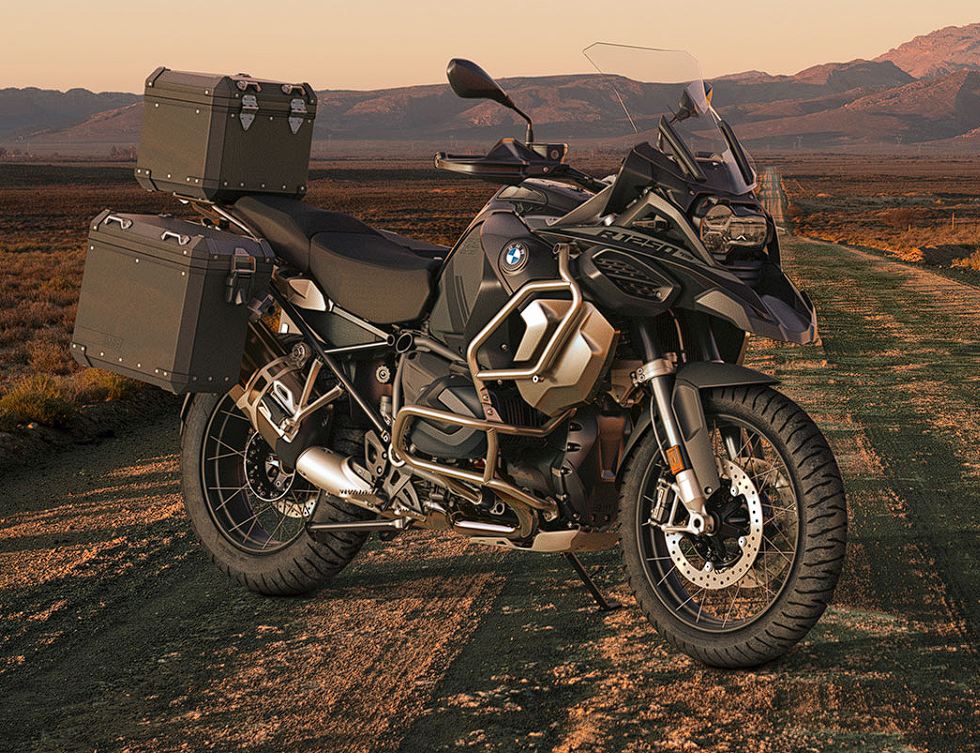

|  | ||||
| Yakıt Tipi | Güç | Cc | Depo | |
| Benzin | 136 bg | 1.254 cc | 30 L | |
BMW R 1250 GS ADVENTURE HİÇBİR HEDEF ÇOK UZAK DEĞİL
ÖNE ÇIKAN ÖZELLİKLERİ KEŞFEDİN R 1250 GS Adventure dünyanın her yerinde kendini evinde hisseder. Hiçbir hedef onun için uzak değildir. İster asfaltta olun ister arazide, yol boyunca sizi nasıl bir zeminin beklediğini bilmeden bile motosikletinize sonuna kadar güvenebilirsiniz. R 1250 GS Adventure’ın size sağladığı konfor ve güven ile uzun mesafelerden daha yoğun bir şekilde keyif alırsınız. R 1250 GS Adventure ile her zaman ekstra birkaç kilometre daha yola hazırsınız.
| İLETİŞİM & DESTEK | HIZLI ERİŞİM |
| İletişim | Model Listesi |
| Geri Dönüşüm | Kataloglar |
| Gönüllü Geri Çağırma | Ayın Özel Teklifleri |